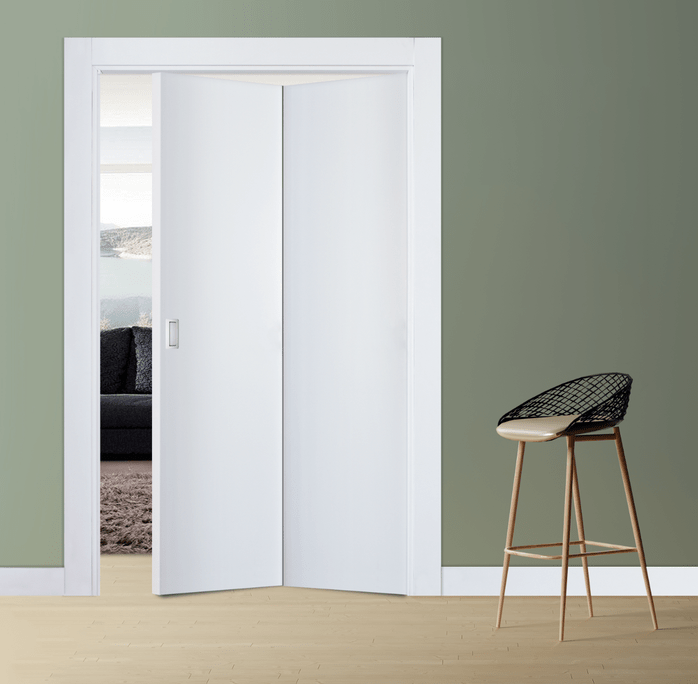

Olá, sou Marcos, um marceneiro apaixonado pelo meu trabalho.
Quem Sou Eu ?
Com anos de experiência, trabalho diretamente na casa dos clientes para garantir instalações perfeitas.

Minha Missão
Transformar a entrada da sua casa com portas e batentes que combinam beleza e funcionalidade.

Alguns dos tipos de porta com que trabalho
Porta Pivotante:
Elegância em Movimento
Uma porta que gira em torno de um eixo vertical, adicionando um toque moderno e elegante a qualquer entrada.
Porta Camarão:
Praticidade e Estilo em um Único Design
Design dobrável, abre em duas ou mais seções tipo sanfona, economizando espaço.
Porta de Correr:
Funcionalidade com Estilo
Desliza horizontalmente, economizando espaço. ideal paraum ambiente moderno e contemporâneos.
Por Que me escolher?
Ao optar pelos meus serviços, você terá a garantia de :
-
info
Atendimento Personalizado:
Comprometido em entender suas necessidades e oferecer soluções que atendam exatamente ao que você procura. Cada projeto é tratado de forma única, garantindo um serviço personalizado do início ao fim.
-
handyman
Instalação Profissional
Com mais de 20 anos na área garanto uma instalação precisa e segura das portas e batentes, assegurando que tudo fique perfeito no seu espaço.
-
star
Garantia de Qualidade
Utilizo materiais de alta qualidade e técnicas precisas para garantir que cada peça tenha um acabamento excepcional e uma durabilidade prolongada.
Atendimento Personalizado:
Comprometido em entender suas necessidades e oferecer soluções que atendam exatamente ao que você procura. Cada projeto é tratado de forma única, garantindo um serviço personalizado do início ao fim.
Instalação Profissional
Com mais de 20 anos na área garanto uma instalação precisa e segura das portas e batentes, assegurando que tudo fique perfeito no seu espaço.
Garantia de Qualidade
Utilizo materiais de alta qualidade e técnicas precisas para garantir que cada peça tenha um acabamento excepcional e uma durabilidade prolongada.